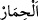

öldükten sonra henüz haşr meydana gelmeden önce Allah’ın dirilttiği bir hayvanı
(merkebi) nasıl sevmem?”
“Katırları” “ el-Biğal” “ Bağl’’in çoğulu olup at ve eşeğin çiftleşmesinden
meydana gelir. Onu ilk defa üreten Kârun’dur. Eşek kadar sabırlı, at kadar kuvvetlidir.
Krallar onu sefer bineği, fakirler de ihtiyaçlarını yerine getirmek için kullanırlardı.
Hz. Ali (r.a.)’ın şöyle dediği rivâyet edilmiştir: Önceleri katırlar üreyen hayvanlardı.
İbrâhim (a.s.)’ın atıldığı ateşe en hızlı onlar odun taşıdığı için o da onlara bedduâ etti.
Allah da onların neslini tüketti.” Bu rivâyet, katır üretmenin Karun’dan önce de var
olduğunu gösterir. Çünkü İbrâhim (a.s.) Mûsâ (a.s.)’dan çok önce yaşamıştır. Ev, erkek
katırın tırnağı yakılarak buhurlansa, o evden farenin ve diğer haşerâtın kaçacağı
söylenmiştir. Nitekim Hayâtü’l-hayevân’da böyle geçmektedir.
Rasûlullah (s.a.)’in altı katırı vardı. Biri, Hirakl’in Mısır vâlisi olan Mukavkıs’ın
Peygamberimiz (s.a.)’e hediye ettiği “Düldül” isminde rengi kır bir katırdı. Aslında
düldül; kirpi demekti. Kirpinin erkeğine ya da büyüğüne ‘düldül’ dendiği de
söylenmiştir. Rasûlullah (s.a.), Medîne’de ve seferlerde ona binerdi. Dişleri
dökülünceye kadar yaşadı, hattâ arpa öğütülerek ona verilirdi, sonra âmâ oldu. Osman
(r.a.) ona bindikten sonra Ali (r.a.) da ona binmiş ve onun üzerinde Hâricîlerle
savaşmıştı. Hz. Ali (r.a.)’dan sonra oğlu Hasan, sonra Hüseyin, sonra da Muhammed b.
Hanefiyye de (r.anhum) ona binmişti.
Fakir (Bursevî) der ki: Onların, Rasûlullah (s.a.)’in bindiği merkebe binmeleri,
teberrük gâyesiyle Allah’tan yardım ve zafer talebi içindi. Öyle görülüyor ki, onlar
önemli durumlar dışında ona binmemişlerdir. Çünkü tâbi olan kişinin uyması gereken
edeblerden birisi de tâbi olduğu kişinin elbisesini giymemek, binitine binmemek,
oturduğu yere oturmamak ve hanımıyla evlenmemektir.
Rasûlullah (s.a.)’in diğer katırları şunlardır: “Fidda” denilen katır, “Eliyye” denilen
katır, Kisrâ’nın hediyesi olan katır, Dûmetül-cendel’den gelen katır, Necâşî’nin
gönderdiği katır.
“Ve eşekleri” “ el-Hamîr”, “ el-hımar” isminin çoğuludur. Rasûlullah
(s.a.)’in Ya‘fûr ve Ufeyr isminde iki merkebi vardı. Ufeyr, toz anlamınadır. Kitâbu’t-
ta‘rîf ve’l-i‘lâm’da der ki: Rasûlullah (s.a.)’in merkebinin ismi Ufeyr olup ona Ya‘fûr
da denirdi.
Merkep, Allah’ın yarattıklarının en zelillerinden biridir. Nitekim şâir der ki:
Kimse kendisine kasdedilen haksızlığa dayanamaz.
Ancak zelil iki şey: Mahallenin eşeği ve kazık.
Bu, zulme iple kendini bağlamaktır,